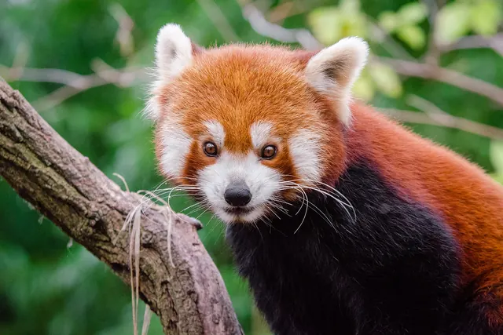

Do red pandas live alone?
Yes. In the wild a red panda spends almost all of its life alone. Adults keep their own patch of forest, avoid each other most of the year and come together mainly in the winter mating season. The one close bond is between a mother and her cubs, and even that ends after about a year.

A solitary animal for most of the year
Smithsonian's National Zoo sums it up plainly: red pandas are solitary except during the breeding season. They do not live in packs, troops or family groups the way wolves, monkeys or meerkats do. Each adult moves through its own home range, which Smithsonian puts at about one square mile for one animal in the wild, feeding, resting in the trees and marking its space.
That lifestyle fits the red panda's diet. Bamboo leaves are low in energy, so a red panda spends much of its waking time picking out the best leaf tips and has little energy to spare for social life. Sharing a feeding area with lots of other pandas would only mean more competition for the same leaves. You can read more about that diet in what do red pandas eat?
What GPS collars revealed
The clearest picture of red panda social life comes from a GPS tracking study in eastern Nepal by Bista and colleagues, published in Endangered Species Research. The team fitted red pandas with GPS collars and looked at how their home ranges overlapped and how often individuals came close to each other. Several patterns stood out:
- Females keep apart. Female red pandas avoided overlapping their home ranges with other females.
- Males overlap several females. A single male's home range overlapped those of up to four females, which fits the polygynous mating system the authors describe, where one male may mate with several females.
- Males tolerate some sharing. Neighbouring males overlapped nearly half of their ranges.
- Meetings are rare. Interactions between males and females were rare outside the mating season.
- They stay loyal to a place. Red pandas showed site fidelity, returning again and again to spots inside their own territory.
The study also found that male home ranges were nearly double the size of female ranges. Our guide to how big a red panda's home range is goes through those numbers in detail.
An older clue from Wolong
Earlier field work in China pointed the same way. In the Wolong Reserve, Kenneth Johnson, George Schaller and Hu Jinchu radio tracked a female red panda for nine months and published the results in the Journal of Mammalogy in 1988. Her home range was 3.4 square kilometres, and she moved through it in gradual shifts, revisiting certain bamboo areas again and again. She was mainly active at dawn, dusk and night, which means she was out when other animals in the forest were less likely to meet her. For more on that timing, see are red pandas nocturnal?
How loners keep in touch
Living alone does not mean living without contact. Red pandas mostly talk through scent. Smithsonian notes they mark territories using anal glands and urine, as well as scent glands between their footpads that release a colourless liquid people cannot smell. A red panda tests these odours with the underside of its tongue. Scent marks let neighbours know who lives nearby and, in the breeding season, who might be ready to mate, without the animals ever having to meet.
When they are close, red pandas can be heard too, though they are quiet animals. Smithsonian lists squeals, twitters and huff quacks, along with hisses and grunts, and says young cubs use a whistle or high pitched bleat when they are distressed.
The exceptions: mating and motherhood
In the Northern Hemisphere red pandas breed from January through March, according to Smithsonian, and the change in day length after the winter solstice sets the season off. This is when males and females seek each other out. Mating happens on the ground, and afterwards the pair goes back to living apart.
The female raises the cubs on her own. She builds a nest in a tree hole, hollow stump, among tree roots or in a bamboo thicket and lines it with moss and leaves. Litters are usually two cubs, born between May and July. The cubs stay with their mother for about a year, which is roughly when they are fully grown, and then leave to find a home range of their own.
Why zoos can be different
If you have seen two red pandas sharing an enclosure, that is not a mistake. Smithsonian notes that in human care most breeding pairs live together all year. Food is plentiful and there is no need to defend a feeding territory, so zoos can keep pairs together in a way that rarely happens in the wild. To see red pandas in person, try our guide to where to see pandas.
Key takeaways
- Wild red pandas are solitary except during the breeding season (Smithsonian's National Zoo).
- GPS tracking in Nepal found that females avoid sharing range, males overlap up to four females, and male and female meetings are rare outside the mating season (Bista and colleagues, Endangered Species Research).
- A radio tracked female in Wolong used a 3.4 square kilometre range and was mainly active at dawn, dusk and night (Johnson, Schaller and Hu 1988, Journal of Mammalogy).
- Red pandas keep in touch mainly through scent marks, and cubs stay with their mother for about a year.
Frequently asked questions
Do red pandas live alone?
Yes, in the wild. Smithsonian's National Zoo describes red pandas as solitary except during the breeding season, and GPS tracking in Nepal found that males and females rarely interact outside the mating season (Bista and colleagues, Endangered Species Research).
Do red pandas live in groups?
No. Red pandas do not form herds, packs or family groups. The only lasting bond is between a mother and her cubs, which stay with her for about a year.
Do red pandas share territory?
Partly. In a GPS study in eastern Nepal, females avoided overlapping their home ranges, while a male's range overlapped those of up to four females and neighbouring males overlapped nearly half of their ranges.
How do red pandas communicate if they live alone?
Mostly by scent. Smithsonian notes they mark territories with anal glands, urine and scent glands between their footpads. Up close they also make quiet sounds such as squeals, twitters and huff quacks.
Do red pandas live alone in zoos?
Not always. Smithsonian's National Zoo notes that in human care most breeding pairs live together all year, which is different from how they live in the wild.
Sources
- Smithsonian's National Zoo and Conservation Biology Institute: Red panda
- Bista et al. (2022), Space use, interaction and recursion in a solitary specialized herbivore: a red panda case study, Endangered Species Research 47: 131 to 143. DOI 10.3354/esr01171
- Johnson, K. G., Schaller, G. B. and Hu, J. (1988), Comparative behavior of red and giant pandas in the Wolong Reserve, China, Journal of Mammalogy 69(3): 552 to 564. DOI 10.2307/1381347
Cite this page
APA
PandasWise. (2026, October 27). Do red pandas live alone? https://pandaswise.com/blog/do-red-pandas-live-alone.html
MLA
"Do red pandas live alone?" PandasWise, 27 Oct. 2026, https://pandaswise.com/blog/do-red-pandas-live-alone.html.
Chicago
PandasWise. "Do red pandas live alone?" PandasWise. October 27, 2026. https://pandaswise.com/blog/do-red-pandas-live-alone.html.